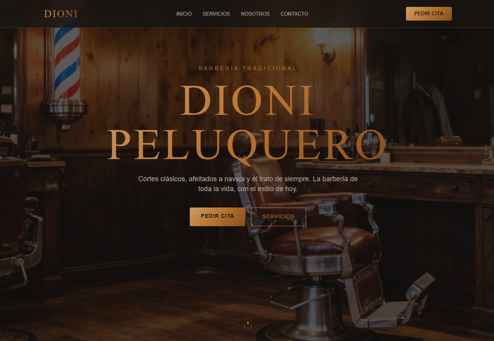
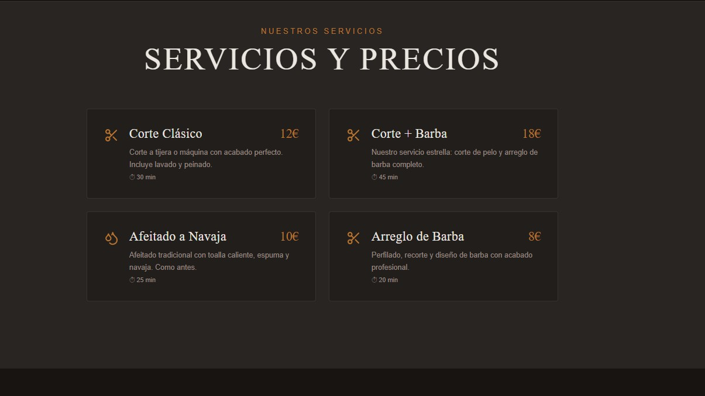
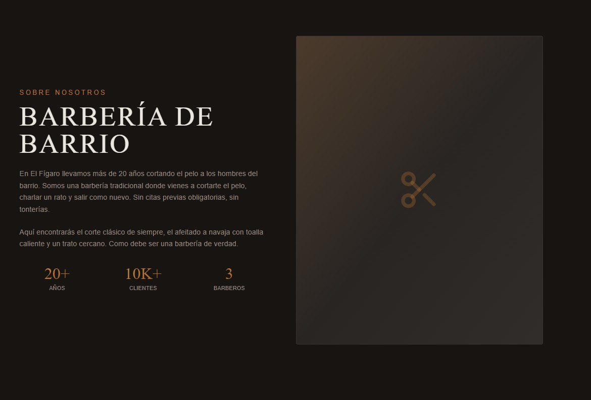
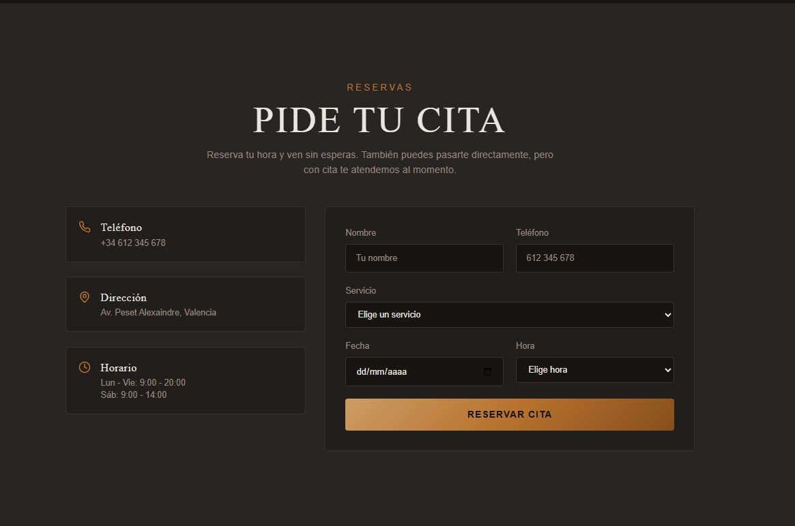

Proyecto Web
Web Peluquería
Desarrollo completo de una página web para una peluquería, enfocada en ofrecer una experiencia moderna y atractiva al usuario.
El proyecto incluye diseño responsive adaptado a móviles y escritorio, estructura clara de servicios y un sistema de reserva de citas intuitivo.
Se ha trabajado especialmente en la usabilidad, velocidad de carga y una estética visual cuidada para transmitir profesionalidad y confianza.
HTML
CSS
JS
PHP


